An artist focused experimental
festival identity and digital experience.
[ IAT238 ]
An artist focused experimental festival identity and digital experience, guiding users to meet artists and enjoy music.
** No actual relation to the SSFB festival, this was for a class project **
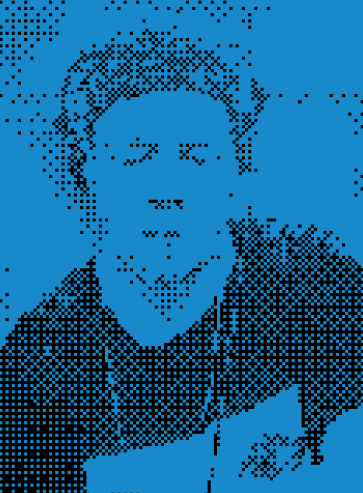
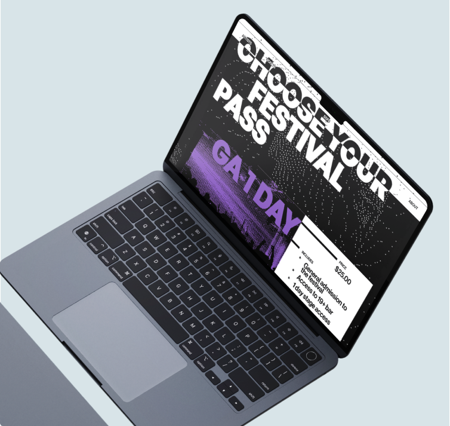
OVERVIEW
Crafting new identity
Our team of 5 redesigned the SSFB festival's digital identity from the ground up, building a microsite that feels as experimental as the music itself.
MISSION
How can we create a digital experience that captures the essence of the SSFB festival, while fostering a deeper connection between artists and attendees?
SOLUTION
Focus on artist community
We framed the site as a pre-festival experience, building anticipation through artist-led content, interactive discovery, and a sense of something just out of reach.
MY CONTRIBUTIONS
Below are my contributions to the research & design :)
RESEARCH
Understanding the client
We dug into the festival's history, values, and audience to understand what makes SSFB distinct, and what a digital experience for it might feel like.
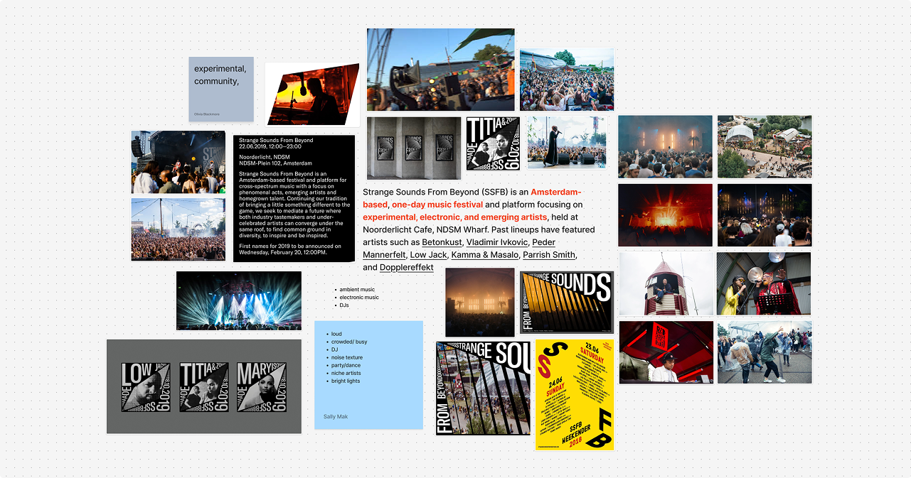
Design techniques inspired by Carson
We studied graphic designer David Carson's experimental design techniques and rule-breaking approach to type and layout in the weeks prior to the final site, our knowledge was then used to inspire our own visual identity.
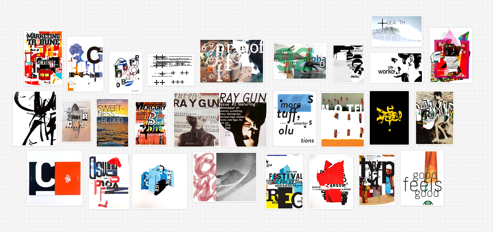
Experimentation & iteration
Week by week, we designed and redesigned. We pushed posters and
microsites in new directions, learning what worked by making what
didn't.
▪
= my contribution,
*
= selected iteration
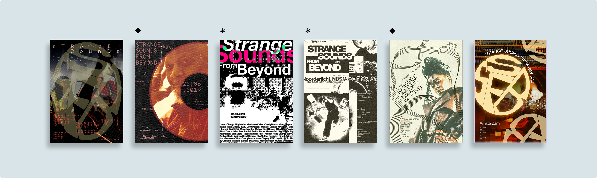
[ Poster experimentation ]
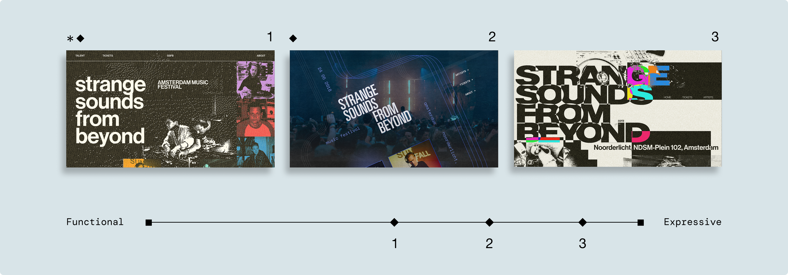
[ Microsite experimentation ]
KEY FLOWS
Exploratory artist discovery
Artist pages tease before they reveal, utilizing hover states, sound clips, and layered details that reward curiosity and keep users exploring.
Simplified ticket flow
We kept the energy alive through checkout. Bold visuals and ambient music guide users through ticketing without breaking the festival mood.
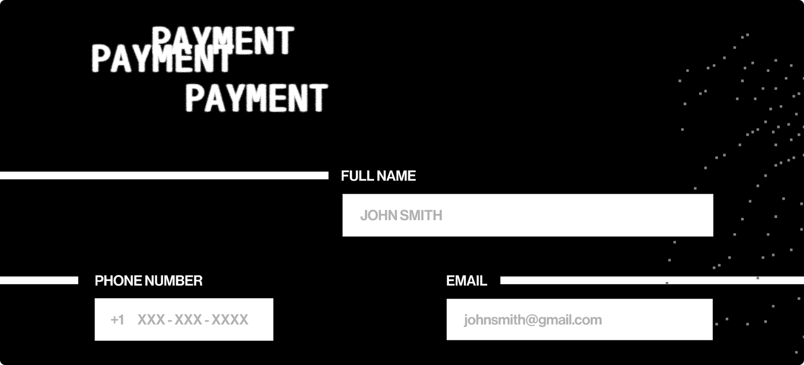
DECISIONS
Building an experimental identity
Heavy type, dither textures, and layers of overlays give SSFB a visual identity that feels raw, tactile, and distinctly underground.
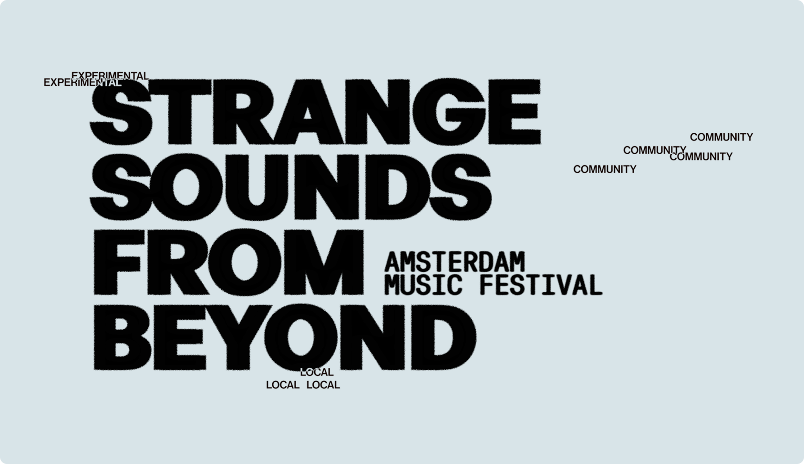
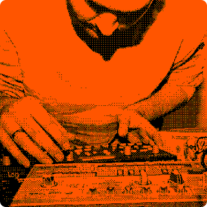
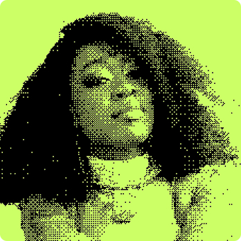
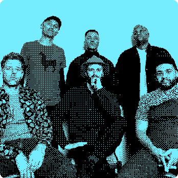
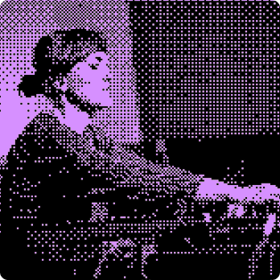
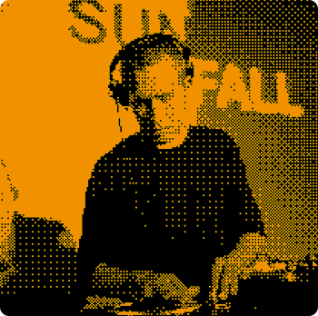
Music player UI
A custom music player lets users preview each artist's top tracks before the festival. Iterated to keep focus on one song at a time — less clutter, more intention.
[ Final music player UI ]
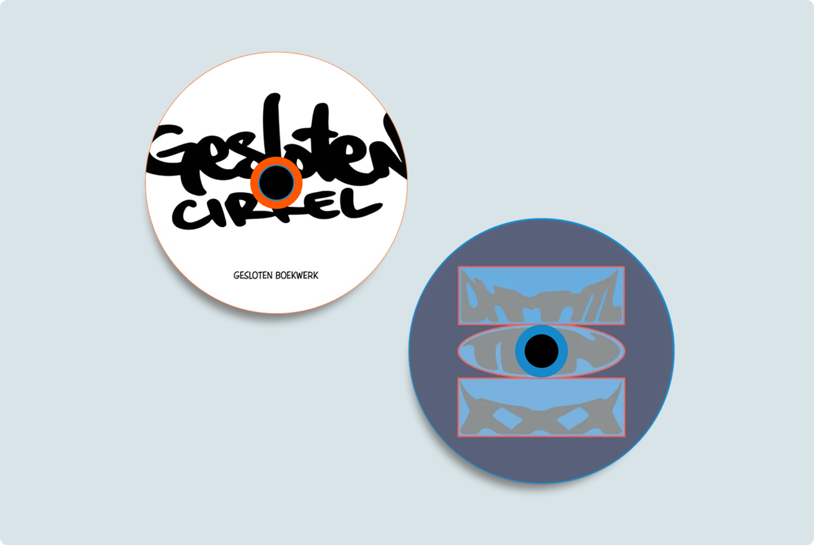
[ Initial music player UI ]
Artist catalogue
A cleaner, more browsable lineup view designed so attendees can move through the full roster without losing the site's experimental feel.
FINAL
Video walkthrough of Strange Sounds
TAKEAWAYS
Iteration is the only way to grow.
Five weeks of weekly critiques and constant rebuilding made the final result possible. Good design doesn't just happen, it builds and grows over time.
Go big, edit later.
The best ideas started too far — too bold, too chaotic, too much.
Diverging wildly gave us substance to work with, and we later
converged that chaos into something real. Safe ideas don't push
anywhere worth going.
p.s. [ theres no such thing as a dumb idea ]
NEXT PROJECT